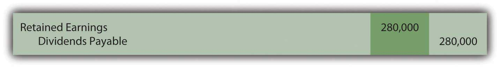
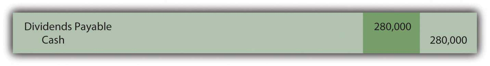

At the end of this section, students should be able to meet the following objectives:
Question: As stated in Chapter 1 "Why Is Financial Accounting Important?", a vast majority of investors purchase capital stock for only two reasons: price appreciation and dividends. Dividends and long-term capital gains (gains on the sale of certain investments that have been held for over a year) are especially appealing to individual investors because they are taxed at a lower rate than most other types of income.
Dividends are usually paid in cash and represent the profits of a business being passed along to the owners. Because the corporation is effectively giving away its assets, dividends require formal approval by the board of directors—known as a dividend declaration. The board considers current cash balances as well as the projected needs of the business before deciding on the amount, if any, of a dividend payment. How does a corporation report the declaration and distribution of a cash dividend?
Answer: Dividends provide a meaningful signal to investors about the financial health of a business. Some corporations even boast about having paid a constant or rising annual dividend for many years. Unfortunately, one result of recent economic times has been that a number of businesses have been forced to reduce or even eliminate dividend distributions. Such decisions typically lead to a drop in the market price of a corporation’s stock because of the negative implications.
Other businesses stress rapid growth and rarely, if ever, pay a cash dividend. The board of directors prefers that all profits remain in the business to stimulate future growth. For example, Netflix Inc. reported net income for 2008 of over $83 million but paid no dividend.
Chronologically, accounting for dividends involves several dates with approximately two to five weeks passing between each:
To illustrate, assume that the Hurley Corporation has one million shares of authorized common stock. To date, three hundred thousand of these shares have been issued but twenty thousand shares were recently bought back as treasury stock. Thus, 280,000 shares are presently outstanding, in the hands of investors. Hurley earned a reported net income of $780,000 in the current year. After some deliberations, the board of directors has decided to distribute a $1.00 cash dividend on each share of common stock.
The day on which the Hurley board of directors formally decides on the payment of this dividend is known as the date of declaration. Legally, this action creates a liability for the company that must be reported in the financial statements. Only the owners of the 280,000 shares that are outstanding will receive this distribution.
Figure 16.9 $1.00 per Share Dividend Declared by Board of Directors
As discussed previously, dividend distributions reduce the amount reported as retained earnings but have no impact on reported net income.
When the dividend is declared by the board, the date of record is also set. All shareholders who own the stock on that day qualify for receipt of the dividend. The ex-dividend date is the first day on which an investor is not entitled to the dividend. Because receipt of the dividend has been lost, the market price of the stock typically drops by approximately the amount of the dividend on the ex-dividend date although myriad other market factors always influence the movement of stock prices.
No journal entry is recorded by the corporation on either the date of record or the ex-dividend date because they do not relate to any event or transaction. Those dates simply allow Hurley to identify the owners to whom the dividend will be paid.
On the date of payment, the corporation mails checks to the appropriate recipients, an event recorded as follows.
Figure 16.10 Payment of $1.00 per Share Cash Dividend

Question: Assume that Wington Company issues a share of $100 par value preferred stock to an investor on January 1, Year One. The preferred stock certificate discloses an annual dividend rate of 8 percent. Thus, dividend payment is $8 each year ($100 × 8 percent). At the end of Year One, Wington faces a cash shortage and is unable to pay this dividend. Have the owners of the preferred shares lost the right to the Year One dividend? Must a corporation report a liability if a preferred stock dividend is not paid at the appointed time?
Answer: Preferred stock dividends are often identified on the stock certificate as “cumulativeFeature attached to most types of preferred stock so that any dividend payments that are omitted one year must still be paid before the holders of common stock receive any dividends..” This term means that the obligation for all unpaid dividends on these shares must be met before dividends can be distributed on common stock. Cumulative dividends are referred to as “in arrears” when past due.
If the dividend on the preferred shares of Wington is cumulative, the $8 is in arrears at the end of Year One. In the future, this (and any other) missed dividend must be paid before any distribution on common stock can be considered. Conversely, if a preferred stock is noncumulative, a missed dividend is simply lost to the owners. It has no impact on the future allocation of dividends between preferred and common shares.
The existence of a cumulative preferred stock dividend in arrears is information that must be disclosed in financial statements. However, the balance is not reported as a liability. Only dividends that have been formally declared by the board of directors are recorded as liabilities. If cumulative, a note to the financial statements should explain Wington’s obligation for any preferred stock dividends in arrears.
Link to multiple-choice question for practice purposes: http://www.quia.com/quiz/2093030.html
Link to multiple-choice question for practice purposes: http://www.quia.com/quiz/2092987.html
Link to multiple-choice question for practice purposes: http://www.quia.com/quiz/2093009.html
Question: A corporate press release issued on May 19, 2009, informed the public that “Green Mountain Coffee Roasters Inc. today announced that its Board of Directors has approved a three-for-two stock splitA division of each share of outstanding stock to increase the number of those shares; it is a method of reducing the market price of the stock; the process is carried out in hopes that a lower price will generate more market activity in the stock and, therefore, a faster rise in price. to be effected in the form of a stock dividend. The Company will distribute one additional share of its common stock to all shareholders of record at the close of business on May 29, 2009, for every two shares of common stock held on that date. The shares will be distributed on June 8, 2009.”
Obviously, as shown by this press release, a corporation can issue additional shares of stock to shareholders instead of distributing only cash dividends. These shares can be issued as a stock dividendA dividend distributed to shareholders by issuing additional shares of stock rather than cash; it increases the number of shares outstanding but each ownership percentage stays the same; as with a stock split, it reduces the price of the stock in hopes of stimulating market interest. or in a slightly different manner as a stock split.As can be seen in this press release, the terms “stock dividend” and “stock split” have come to be virtually interchangeable to the public. Both terms were used by Green Mountain. However, minor legal differences do exist that actually impact reporting. Par value is changed to create a stock split but not for a stock dividend. Interestingly, stock splits have no reportable impact on financial statements but stock dividends do. Therefore, only stock dividends will be described in this textbook.No assets are distributed in either of these scenarios—just more shares of the company’s own stock. Are shareholders better off when they receive additional shares in a stock dividend?
Answer: When a stock dividend is issued, the number of shares held by every investor increases but their percentage ownership stays the same. Their ownership interest in the corporation remains proportionally unchanged.
To illustrate, assume that the Red Company reports net assets of $5 million. Janis Samples owns one thousand of the outstanding ten thousand shares of this company’s common stock. She holds a 10 percent ownership interest (1,000/10,000) in a business that holds net assets of $5 million.
The board of directors then declares and distributes a 4 percent stock dividend. For each one hundred shares that a stockholder possesses, Red Company issues an additional 4 shares (4 percent of one hundred). Thus, four hundred new shares are conveyed to the ownership as a whole (4 percent of ten thousand) which raises the total number of outstanding shares to 10,400. However, a stock dividend has no actual impact on the corporation. There are simply more shares outstanding. Nothing else has changed.
Janis Samples receives forty of these newly issued shares (4 percent of one thousand) so that her holdings have grown to 1,040 shares. After this stock dividend, she still owns 10 percent (1,040/10,400) of the outstanding stock of Red Company and it still reports net assets of $5 million. The investor’s financial position has not improved; she has gained nothing as a result of this stock dividend.
Not surprisingly, the investor makes no journal entry in accounting for the receipt of a stock dividend. No change has taken place except for the number of shares being held.
However, the corporation does make a journal entry to record the issuance of a stock dividend although it creates no impact on either assets or liabilities. The retained earnings balance is decreased by the fair value of the shares issued while contributed capital (common stock and capital in excess of par valueFigure represents amount received by a corporation from the original issuance of capital stock that is in excess of par value; also called additional paid in capital.) are increased by the same amount.
According to U.S. GAAP, if a stock dividend is especially large (in excess of 20–25 percent of the outstanding shares), the change in retained earnings and contributed capital is recorded at par value rather than fair value.A stock dividend of between 20 and 25 percent can be recorded at either fair value or par value.
Link to multiple-choice question for practice purposes: http://www.quia.com/quiz/2092989.html
Link to multiple-choice question for practice purposes: http://www.quia.com/quiz/2093010.html
Question: If no changes occur in the makeup of a corporation as the result of a stock dividend, why does a board of directors choose to issue one?
Answer: The primary purpose served by a stock dividend (or a stock split) is a reduction in the market price of the corporation’s capital stock. When the price of a share of stock rises to a high level, fewer investors are willing to make purchases. At some point, market interest wanes. The resulting reduction in demand will likely have a negative impact on the stock price. A growing company might find that a previously escalating trend in its market value has hit a plateau when the price of each share rises too high
By issuing a large quantity of new shares (sometimes two to five times as many shares as were outstanding), the price falls, often precipitously. For example, an owner who held one hundred shares at a market price of $120 per share (total value of $12,000) might now have two hundred shares selling at $60 per share or three hundred shares selling at $40 per share (but with the same total market value of $12,000). The stockholder’s investment remains unchanged but, hopefully, the stock is now more attractive to investors at the lower price so that the level of active trading increases.
Stock dividends also provide owners with the possibility of other benefits. For example, cash dividend payments usually drop after a stock dividend but not always in proportion to the change in the number of outstanding shares. An owner might hold one hundred shares of common stock in a corporation that has paid $1 per share as an annual cash dividend over the past few years (a total of $100 per year). After a 2-for-1 stock dividend, this person now owns two hundred shares. The board of directors might then choose to reduce the annual cash dividend to only $0.60 per share so that future payments go up to $120 per year (two hundred shares × $0.60 each). Such a benefit, though, is not guaranteed. The investors can merely hope that additional cash dividends will be received.
Many corporations distribute cash dividends after a formal declaration is passed by the board of directors. Journal entries are required on both the date of declaration and the date of payment. The date of record and the ex-dividend date are important in identifying the owners entitled to receive the dividend but no transaction occurs. Hence, no recording is made on those dates. Preferred stock dividends are often cumulative so that any dividends in arrears must be paid before a common stock distribution can be made. Dividends in arrears are not recorded as liabilities until declared. Stock dividends and stock splits are issued to reduce the market price of capital stock and keep potential investors interested in the possibility of acquiring ownership. A stock dividend is recorded as a reduction in retained earnings and an increase in contributed capital. However, stock dividends have no immediate impact on the financial condition of either the company or its stockholders.